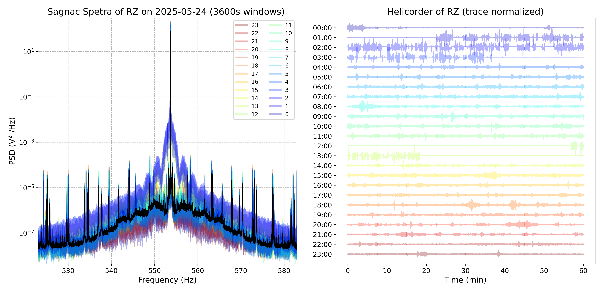
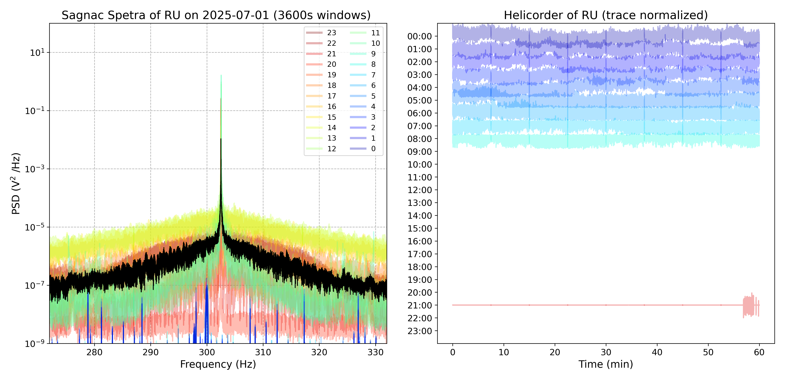
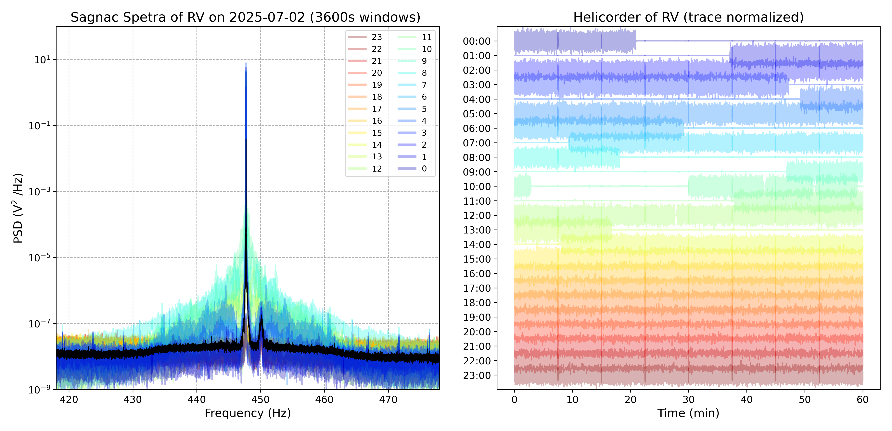
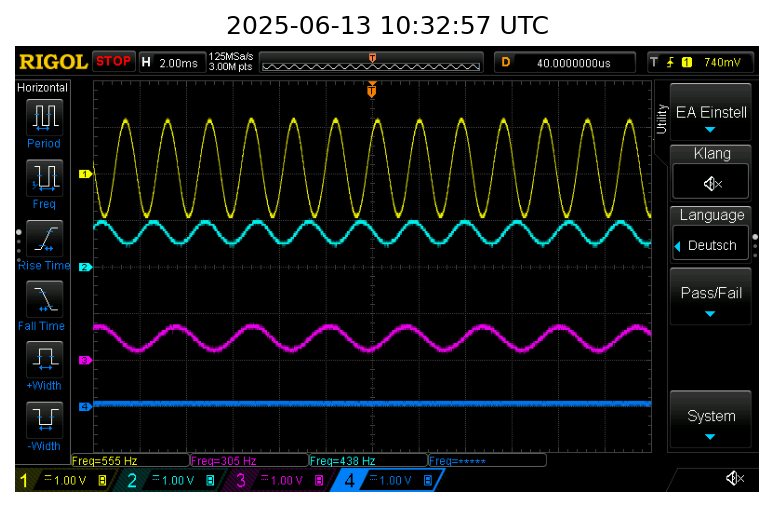

Overview
Sagnac Spectra (Z Ring)

Spectral snapshot for Z ring
Sagnac Spectra (U Ring)

Spectral snapshot for U ring
Sagnac Spectra (V Ring)

Spectral snapshot for V ring
Sagnac Spectra (W Ring) (Currently unavailable, repeating V)
Spectral snapshot for W ring
Drumplot (Helicorder)

Latest drumplot (helicorder) overview
General Information
This page provides a quick overview of the ROMY ring laser status.